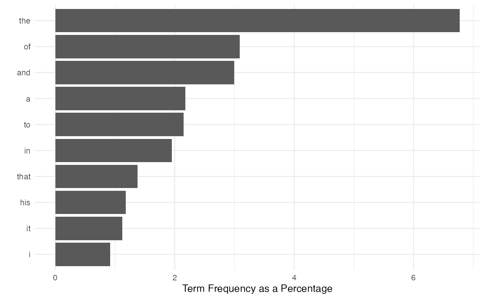
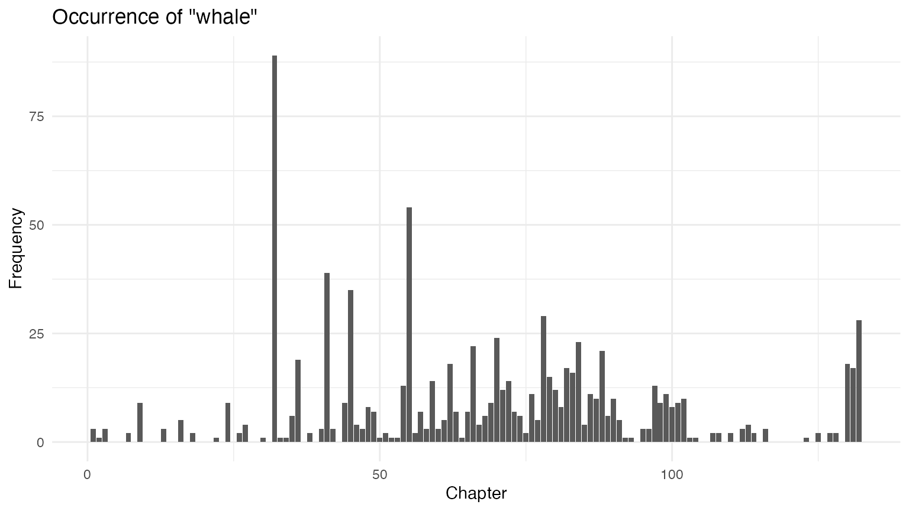

Replication: Text Analysis with R for Students of Literature
Kenneth Benoit, Stefan Müller, and Paul Nulty
Source:vignettes/pkgdown/replication/digital-humanities.Rmd
digital-humanities.RmdIn this vignette we show how the quanteda package can be used to replicate the analysis from Matthew Jockers’ book Text Analysis with R for Students of Literature (London: Springer, 2014). Most of the Jockers book consists of loading, transforming, and analyzing quantities derived from text and data from text. Because quanteda has built in most of the code to perform these data transformations and analyses, it makes it possible to replicate the results from the book with far less code. Throughout this vignette, we name objects based on Jockers’ book, but follow the quanteda style guide.
In what follows, each section corresponds to the respective chapter in the book.
1 R Basics
Our closest equivalent is simply:
install.packages("quanteda")
install.packages("readtext")But if you are reading this vignette, than chances are that you have already completed this step.
2 First Foray
2.1 Loading the first text file
We can load the text from Moby Dick using the readtext package, directly from the Project Gutenberg website.
data_char_mobydick <- as.character(readtext::readtext("http://www.gutenberg.org/cache/epub/2701/pg2701.txt"))
names(data_char_mobydick) <- "Moby Dick"The readtext() function from the
readtext package loads the text files into a
data.frame object. We can access the text from a
data.frame object (and also, as we will see, a
corpus class object). Here we will display just the first
75 characters, to prevent a massive dump of the text of the entire
novel. We do this using the stri_sub() function from the
stringi package, which shows the 1st through the 75th
characters of the texts of our new object
data_char_mobydick. Because we have not assigned the return
from this command to any object, it invokes a print method for character
objects, and is displayed on the screen.
## [1] "The Project Gutenberg eBook of Moby Dick; Or, The Whale\n \nThis ebook is "2.2 Separate content from metadata
The Gutenburg edition of the text contains some metadata before and
after the text of the novel. The code below uses the
regexec and substring functions to separate
this from the text.
# extract the header information
(start_v <- stri_locate_first_fixed(data_char_mobydick, "CHAPTER 1. Loomings.")[1])## [1] 873
(end_v <- stri_locate_last_fixed(data_char_mobydick, "orphan.")[1])## [1] 1219670Here, we found the character index of the beginning and end of the
novel, rather than counting the lines as in the book, but the result
will be very similar. If we want to verify that “orphan.” is the end of
the novel, we can use the kwic() function:
## Keyword-in-context with 1 match.
## [Moby Dick, 252772] children, only found another | orphan | .*** ENDIf we want to count the number of lines, we can do so by counting the newlines in the text.
stri_count_fixed(data_char_mobydick, "\n")## [1] 22314To measure just the number lines in the novel itself, without the metadata, we can subset the text from the start and end of the novel part, as identified above.
stri_sub(data_char_mobydick, from = start_v, to = end_v) |>
stri_count_fixed("\n")## [1] 21917To trim the non-book content, we use stri_sub() to
extract the text between the beginning and ending indexes found
above:
## [1] 1## CHAPTER 1. Loomings.
##
## CHAPTER 2. The Carpet-Bag.
##
## CHAPTER 3. The Spouter-Inn.
##
## CHAPTER 4. The2.3 Reprocessing the content
We begin processing the text by converting to lower case.
quanteda’s *_tolower() functions work like
the built-in tolower(), with an extra option to preserve
upper-case acronyms when detected. To work with the novel efficiently,
however, we will first tokenise it. Then, we can manipulate it using
functions such as tokens_tolower().
novel_v_toks <- tokens(novel_v)
# lowercase text
novel_v_toks_lower <- tokens_tolower(novel_v_toks)quanteda’s tokens() function splits the
text into words, with many options available for which characters should
be preserved, and which should be used to define word boundaries. The
default behaviour works similarly to splitting on the regular expression
for non-word characters (\W as in the book), but it much
smarter. For instance, it does not treat apostrophes as word boundaries,
meaning that 's and 't are not treated as
whole words from possessive forms and contractions.
To remove punctuation, we can re-process the existing tokens:
moby_word_v <- tokens(novel_v_toks_lower, remove_punct = TRUE)
(total_length <- ntoken(moby_word_v))## text1
## 213374
moby_word_v[["text1"]][1:10]## [1] "chapter" "1" "loomings" "chapter" "2"
## [6] "the" "carpet-bag" "chapter" "3" "the"
moby_word_v[["text1"]][99986] ## [1] "teeth"
moby_word_v[["text1"]][c(4, 5, 6)]## [1] "chapter" "2" "the"## [1] 166 275 291 333 500 5662.4 Beginning the analysis
The code below uses the tokenized text to the occurrence of the word whale. To include the possessive form whale’s, we may sum the counts of both forms, count the keyword-in-context matches by regular expression or glob. A glob is a simple wildcard matching pattern common on Unix systems – asterisks match zero or more characters.
Note that the counts below do not match those in the book, due to
differences in how the book has split on any non-word character, while
quanteda’s tokenizer splits on a more comprehensive set
of “word boundaries”. quanteda’s tokens()
function by default does not remove punctuation or numbers (both defined
as “non-word” characters) by default. To more closely match the counts
in the book, we have removed punctuation.
lengths(tokens_select(moby_word_v, "whale"))## text1
## 952
# total occurrences of "whale" including possessive
lengths(tokens_select(moby_word_v, c("whale", "whale's")))## text1
## 952## [1] 952## [1] 1676
(total_whale_hits <- nrow(kwic(novel_v_toks_lower, pattern = "^whale('s){0,1}$", valuetype = "regex")))## [1] 952What fraction of the total words (excluding punctuation) in the novel are “whale”?
total_whale_hits / ntoken(novel_v_toks_lower, remove_punct = TRUE) ## text1
## 0.004461649With ntype() we can calculate the size of the vocabulary
– includes possessive forms, but excludes punctuation, symbols and
numbers.
## [1] 1
ntype(novel_v_toks_lower, remove_punct = TRUE)## text1
## 19975To quickly sort the word types by their frequency, we can use the
dfm() command to create a matrix of counts of each word
type – a document-frequency matrix. In this case there is only one
document, the entire book.
# ten most frequent words
moby_dfm <- dfm(moby_word_v)
moby_dfm## Document-feature matrix of: 1 document, 19,975 features (0.00% sparse) and 0 docvars.
## features
## docs chapter 1 loomings 2 the carpet-bag 3 spouter-inn 4 counterpane
## text1 308 3 2 2 14451 5 5 5 2 7
## [ reached max_nfeat ... 19,965 more features ]Getting the list of the most frequent 10 terms is easy, using
textstat_frequency().
library("quanteda.textstats")
textstat_frequency(moby_dfm, n = 10) ## feature frequency rank docfreq group
## 1 the 14451 1 1 all
## 2 of 6596 2 1 all
## 3 and 6395 3 1 all
## 4 a 4648 4 1 all
## 5 to 4585 5 1 all
## 6 in 4159 6 1 all
## 7 that 2941 7 1 all
## 8 his 2523 8 1 all
## 9 it 2389 9 1 all
## 10 i 1960 10 1 allFinally, if we wish to plot the most frequent (50) terms, we can
supply the results of textstat_frequency() to
ggplot() to plot their frequency by their rank:
# plot frequency of 50 most frequent terms
library("ggplot2")
theme_set(theme_minimal())
textstat_frequency(moby_dfm, n = 50) |>
ggplot(aes(x = rank, y = frequency)) +
geom_point() +
labs(x = "Frequency rank", y = "Term frequency")
For direct comparison with the next chapter, we also create the sorted list of the most frequently found words using this:
sorted_moby_freqs_t <- topfeatures(moby_dfm, n = nfeat(moby_dfm))3 Accessing and Comparing Word Frequency Data
3.1 Accessing Word Data
We can query the document-frequency matrix to retrieve word frequencies, as with a normal matrix:
# frequencies of "he" and "she" - these are matrixes, not numerics
sorted_moby_freqs_t[c("he", "she", "him", "her")]## he she him her
## 1761 116 1051 326
# another method: indexing the dfm
moby_dfm[, c("he", "she", "him", "her")]## Document-feature matrix of: 1 document, 4 features (0.00% sparse) and 0 docvars.
## features
## docs he she him her
## text1 1761 116 1051 326
sorted_moby_freqs_t[1]## the
## 14451
sorted_moby_freqs_t["the"]## the
## 14451
# term frequency ratios
sorted_moby_freqs_t["him"] / sorted_moby_freqs_t["her"]## him
## 3.223926
sorted_moby_freqs_t["he"] / sorted_moby_freqs_t["she"]## he
## 15.18103Total number of tokens:
ntoken(moby_dfm)## text1
## 213374
sum(sorted_moby_freqs_t)## [1] 2133743.2 Recycling
Relative term frequencies:
sorted_moby_rel_freqs_t <- sorted_moby_freqs_t / sum(sorted_moby_freqs_t) * 100
sorted_moby_rel_freqs_t["the"]## the
## 6.772615
# by weighting the dfm directly
moby_dfm_pct <- dfm_weight(moby_dfm, scheme = "prop") * 100
dfm_select(moby_dfm_pct, pattern = "the")## Document-feature matrix of: 1 document, 1 feature (0.00% sparse) and 0 docvars.
## features
## docs the
## text1 6.772615Plotting the most frequent terms, replicating the plot from the book:
plot(sorted_moby_rel_freqs_t[1:10], type = "b",
xlab = "Top Ten Words", ylab = "Percentage of Full Text", xaxt = "n")
axis(1,1:10, labels = names(sorted_moby_rel_freqs_t[1:10]))
Plotting the most frequent terms using ggplot2:
textstat_frequency(moby_dfm_pct, n = 10) |>
ggplot(aes(x = reorder(feature, -rank), y = frequency)) +
geom_bar(stat = "identity") + coord_flip() +
labs(x = "", y = "Term Frequency as a Percentage")
4 Token Distribution Analysis
4.1 Dispersion plots
A dispersion plot allows us to visualize the occurrences of
particular terms throughout the text. The object returned by the
kwic function can be plotted to display a dispersion plot.
The quanteda textplot_ objects are based
on ggplot2, so you can easily change the plot, for
example by adding custom title.
# using words from tokenized corpus for dispersion
library("quanteda.textplots")
textplot_xray(kwic(novel_v_toks, pattern = "whale")) +
ggtitle("Lexical dispersion")## Warning: Use of `x$ntokens` is discouraged.
## ℹ Use `ntokens` instead.
To produce multiple dispersion plots for comparison, you can simply
send more than one kwic() output to
textplot_xray():
textplot_xray(
kwic(novel_v_toks, pattern = "whale"),
kwic(novel_v_toks, pattern = "Ahab")) +
ggtitle("Lexical dispersion")## Warning: Use of `x$ntokens` is discouraged.
## ℹ Use `ntokens` instead.4.2 Searching with regular expression
# identify the chapter break locations
chap_positions_v <- kwic(novel_v_toks, phrase(c("CHAPTER \\d")), valuetype = "regex")$from
head(chap_positions_v)## [1] 1 6 12 18 24 294.2 Identifying chapter breaks
Splitting the text into chapters means that we will have a collection
of documents, which makes this a good time to make a corpus
object to hold the texts. Initially, we make a single-document corpus,
and then use the corpus_segment() function to split this by
the string which specifies the chapter breaks.
Because of the header information, however, we want to discard the first part. We can do this by segmenting the text according to the first chapter, “CHAPTER 1. Loomings.”, which is preceded by 5 newlines.
chapters_char <-
data_char_mobydick |>
char_segment(pattern = "\\n{5}CHAPTER 1\\. Loomings\\.\\n",
valuetype = "regex", remove_pattern = FALSE)
sapply(chapters_char, substring, 1, 100)## Moby Dick.1
## "The Project Gutenberg eBook of Moby Dick; Or, The Whale\n \nThis ebook is for the use of anyone any"
## Moby Dick.2
## "CHAPTER 1. Loomings.\n\nCall me Ishmael. Some years ago—never mind how long precisely—having\nlittle or"## CHAPTER 1. Loomings.
##
## Call me Ishmael. Some years ago—never mind how long precisely—having
## little or no money in my purse, and nothing particular to interest me
## on shore, I thought I would sail aboutNow we can segment the text based on the chapter titles. These titles
are automatically extracted into the pattern document
variables, and the text of each chapter becomes the text of each new
document unit. To tidy this up, we can remove the trailing
\n character, using stri_trim_both(), since
the \n is a member of the “whitespace” group.
chapters_corp <- chapters_char |>
corpus() |>
corpus_segment(pattern = "CHAPTER\\s\\d+.*\\n\\n", valuetype = "regex")
chapters_corp$pattern <- stringi::stri_trim_both(chapters_corp$pattern)
chapters_corp <- corpus_subset(chapters_corp, chapters_corp != "")
summary(chapters_corp, 10)## Corpus consisting of 132 documents, showing 10 documents:
##
## Text Types Tokens Sentences pattern
## Moby Dick.2.1 919 2507 101 CHAPTER 1. Loomings.
## Moby Dick.2.2 655 1668 60 CHAPTER 2. The Carpet-Bag.
## Moby Dick.2.3 1777 6785 263 CHAPTER 3. The Spouter-Inn.
## Moby Dick.2.4 686 1878 54 CHAPTER 4. The Counterpane.
## Moby Dick.2.5 405 848 29 CHAPTER 5. Breakfast.
## Moby Dick.2.6 467 933 44 CHAPTER 6. The Street.
## Moby Dick.2.7 519 1072 40 CHAPTER 7. The Chapel.
## Moby Dick.2.8 479 1070 29 CHAPTER 8. The Pulpit.
## Moby Dick.2.9 1268 4219 166 CHAPTER 9. The Sermon.
## Moby Dick.2.10 660 1773 66 CHAPTER 10. A Bosom Friend.For better reference, let’s also rename the document labels with these chapter headings:
docnames(chapters_corp) <- chapters_corp$pattern4.4.5 barplots of whale and ahab
With the corpus split into chapters, we can use the
dfm() function to create a matrix of counts of each word in
each chapter – a document-frequency matrix.
# create a dfm
chap_dfm <- tokens(chapters_corp) |>
dfm()
# extract row with count for "whale"/"ahab" in each chapter
# and convert to data frame for plotting
whales_ahabs_df <- chap_dfm |>
dfm_keep(pattern = c("whale", "ahab")) |>
convert(to = "data.frame")
whales_ahabs_df$chapter <- 1:nrow(whales_ahabs_df)
ggplot(data = whales_ahabs_df, aes(x = chapter, y = whale)) +
geom_bar(stat = "identity") +
labs(x = "Chapter",
y = "Frequency",
title = 'Occurrence of "whale"')
ggplot(data = whales_ahabs_df, aes(x = chapter, y = ahab)) +
geom_bar(stat = "identity") +
labs(x = "Chapter",
y = "Frequency",
title = 'Occurrence of "ahab"')
The above plots are raw frequency plots. For relative frequency
plots, (word count divided by the length of the chapter) we can weight
the document-frequency matrix. To obtain expected word frequency per 100
words, we multiply by 100. To get a feel for what the resulting weighted
dfm (document-feature matrix) looks like, you can inspect it with the
head function, which prints the first few rows and
columns.
rel_dfm <- dfm_weight(chap_dfm, scheme = "prop") * 100
head(rel_dfm)## Document-feature matrix of: 6 documents, 19,651 features (96.02% sparse) and 1 docvar.
## features
## docs call me ishmael .
## CHAPTER 1. Loomings. 0.03988831 0.9573195 0.07977663 3.191065
## CHAPTER 2. The Carpet-Bag. 0 0.3597122 0.23980815 2.697842
## CHAPTER 3. The Spouter-Inn. 0.01473839 0.6190125 0 3.345615
## CHAPTER 4. The Counterpane. 0 1.0117146 0 2.715655
## CHAPTER 5. Breakfast. 0 0.1179245 0 3.066038
## CHAPTER 6. The Street. 0 0.1071811 0 4.180064
## features
## docs some years ago—never mind
## CHAPTER 1. Loomings. 0.43877144 0.03988831 0.03988831 0.03988831
## CHAPTER 2. The Carpet-Bag. 0.05995204 0.05995204 0 0.05995204
## CHAPTER 3. The Spouter-Inn. 0.25055269 0.05895357 0 0.04421518
## CHAPTER 4. The Counterpane. 0.05324814 0 0 0.05324814
## CHAPTER 5. Breakfast. 0.23584906 0 0 0
## CHAPTER 6. The Street. 0.10718114 0 0 0
## features
## docs how long
## CHAPTER 1. Loomings. 0.11966494 0.07977663
## CHAPTER 2. The Carpet-Bag. 0.05995204 0
## CHAPTER 3. The Spouter-Inn. 0.05895357 0.14738394
## CHAPTER 4. The Counterpane. 0.21299255 0.10649627
## CHAPTER 5. Breakfast. 0.23584906 0.23584906
## CHAPTER 6. The Street. 0.21436227 0
## [ reached max_nfeat ... 19,641 more features ]
# subset dfm and convert to data.frame object
rel_chap_freq <- rel_dfm |>
dfm_keep(pattern = c("whale", "ahab")) |>
convert(to = "data.frame")
rel_chap_freq$chapter <- 1:nrow(rel_chap_freq)
ggplot(data = rel_chap_freq, aes(x = chapter, y = whale)) +
geom_bar(stat = "identity") +
labs(x = "Chapter", y = "Relative frequency",
title = 'Occurrence of "whale"')5 Correlation
5.2 Correlation Analysis
Correlation analysis (and many other similarity measures) can be
constructed using fast, sparse means through the
textstat_simil() function. Here, we select feature
comparisons for just “whale” and “ahab”, and convert this into a matrix
as in the book. Because correlations are sensitive to document length,
we first convert this into a relative frequency using
dfm_weight().
dfm_weight(chap_dfm, scheme = "prop") |>
textstat_simil(y = chap_dfm[, c("whale", "ahab")], method = "correlation", margin = "features") |>
as.matrix() |>
head(2)## whale ahab
## call 0.1003068 -0.03578342
## me -0.1656477 0.07728298With the ahab frequency and whale frequency vectors extracted from the dfm, it is easy to calculate the significance of the correlation.
5.4 Testing Correlation with Randomization
cor_data_df <- dfm_weight(chap_dfm, scheme = "prop") |>
dfm_keep(pattern = c("ahab", "whale")) |>
convert(to = "data.frame")
# sample 1000 replicates and create data frame
n <- 1000
samples <- data.frame(
cor_sample = replicate(n, cor(sample(cor_data_df$whale), cor_data_df$ahab)),
id_sample = 1:n
)
# plot distribution of resampled correlations
ggplot(data = samples, aes(x = cor_sample, y = after_stat(density))) +
geom_histogram(colour = "black", binwidth = 0.01) +
geom_density(colour = "red") +
labs(x = "Correlation Coefficient", y = NULL,
title = "Histogram of Random Correlation Coefficients with Normal Curve")
6 Measures of Lexical Variety
6.2 Mean word frequency
# length of the book in chapters
ndoc(chapters_corp)## [1] 132## [1] "CHAPTER 1. Loomings." "CHAPTER 2. The Carpet-Bag."
## [3] "CHAPTER 3. The Spouter-Inn." "CHAPTER 4. The Counterpane."
## [5] "CHAPTER 5. Breakfast." "CHAPTER 6. The Street."Calculating the mean word frequencies is easy:
## CHAPTER 1. Loomings. CHAPTER 2. The Carpet-Bag.
## 2507 1668
## CHAPTER 3. The Spouter-Inn. CHAPTER 4. The Counterpane.
## 6785 1878
## CHAPTER 5. Breakfast. CHAPTER 6. The Street.
## 848 933## CHAPTER 1. Loomings. CHAPTER 2. The Carpet-Bag.
## 2.727965 2.546565
## CHAPTER 3. The Spouter-Inn. CHAPTER 4. The Counterpane.
## 3.818233 2.737609
## CHAPTER 5. Breakfast. CHAPTER 6. The Street.
## 2.093827 1.9978596.3 Extracting Word Usage Means
Since the quotient of the number of tokens and number of types is a
vector, we can simply feed this to plot() using the pipe
operator:

For the scaled plot:
6.4 Ranking the values
mean_word_use_m <- (ntoken(chapters_corp) / ntype(chapters_corp))
sort(mean_word_use_m, decreasing = TRUE) |> head()## CHAPTER 135. The Chase.—Third Day. CHAPTER 54. The Town-Ho’s Story.
## 4.110568 4.069409
## CHAPTER 16. The Ship. CHAPTER 3. The Spouter-Inn.
## 3.892216 3.818233
## CHAPTER 32. Cetology. CHAPTER 72. The Monkey-Rope.
## 3.662275 3.5850566.5 Calculating the TTR
Measures of lexical diversity can be estimated using
textstat_lexdiv(). The TTR (Type-Token Ratio), a measure
used in section 6.5, can be calculated for each document of the
dfm.
tokens(chapters_corp) |>
dfm() |>
textstat_lexdiv(measure = "TTR") |>
head(n = 10)## document TTR
## 1 CHAPTER 1. Loomings. 0.3893443
## 2 CHAPTER 2. The Carpet-Bag. 0.4330764
## 3 CHAPTER 3. The Spouter-Inn. 0.2900000
## 4 CHAPTER 4. The Counterpane. 0.4014599
## 5 CHAPTER 5. Breakfast. 0.5190736
## 6 CHAPTER 6. The Street. 0.5396040
## 7 CHAPTER 7. The Chapel. 0.5122732
## 8 CHAPTER 8. The Pulpit. 0.4862288
## 9 CHAPTER 9. The Sermon. 0.3350154
## 10 CHAPTER 10. A Bosom Friend. 0.40180887 Hapax Richness
Another measure of lexical diversity is Hapax richness, defined as the number of words that occur only once divided by the total number of words. We can calculate Hapax richness very simply by using a logical operation on the document-feature matrix, to return a logical value for each term that occurs once, and then sum these to get a count.
## CHAPTER 1. Loomings. CHAPTER 2. The Carpet-Bag.
## 624 443
## CHAPTER 3. The Spouter-Inn. CHAPTER 4. The Counterpane.
## 1140 472
## CHAPTER 5. Breakfast. CHAPTER 6. The Street.
## 283 346
# as a proportion
hapax_proportion <- rowSums(chap_dfm == 1) / ntoken(chap_dfm)
head(hapax_proportion)## CHAPTER 1. Loomings. CHAPTER 2. The Carpet-Bag.
## 0.2489031 0.2655875
## CHAPTER 3. The Spouter-Inn. CHAPTER 4. The Counterpane.
## 0.1680177 0.2513312
## CHAPTER 5. Breakfast. CHAPTER 6. The Street.
## 0.3337264 0.3708467To plot this:
8 Do it KWIC
For this, and the next chapter, we simply use
quanteda’s excellent kwic() function. To
find the indexes of the token positions for “gutenberg”, for instance,
we use the following, which returns a data.frame with the name
from indicating the index position of the start of the
token match:
data_tokens_mobydick <- tokens(data_char_mobydick)
gutenberg_kwic <- kwic(data_tokens_mobydick, pattern = "gutenberg")
head(gutenberg_kwic$from, 10)## [1] 3 60 142 252781 252879 252887 252894 252930 252977 2530249 Do it KWIC (Better)
This is going to be super easy since we don’t need to reinvent the
wheel here, since kwic() already does all that we need.
Let’s create a corpus containing Moby Dick but also Jane Austen’s Sense and Sensibility.
data_char_senseandsensibility <- as.character(readtext::readtext("http://www.gutenberg.org/files/161/161-0.txt"))
names(data_char_senseandsensibility) <- "Sense and Sensibility"
litcorpus <- corpus(c(data_char_mobydick, data_char_senseandsensibility))Now we can use kwic() to find out where in each novel
this occurred:
## Keyword-in-context with 17 matches.
## [Moby Dick, 17804] all over like a Newfoundland | dog |
## [Moby Dick, 32180] was seen swimming like a | dog |
## [Moby Dick, 59875] last. — Down, | dog |
## [Moby Dick, 59976] not tamely be called a | dog |
## [Moby Dick, 60485] didn’t he call me a | dog |
## [Moby Dick, 86548] sacrifice of the sacred White | Dog |
## [Moby Dick, 124868] life that lives in a | dog |
## [Moby Dick, 124964] the sagacious kindness of the | dog |
## [Moby Dick, 158387] “ The ungracious and ungrateful | dog |
## [Moby Dick, 158427] Give way, greyhounds! | Dog |
## [Moby Dick, 169591] to the whale that a | dog |
## [Moby Dick, 192660] Aries, or the Ram—lecherous | dog |
## [Moby Dick, 196112] . ( Bunger, you | dog |
## [Moby Dick, 196573] die in pickle, you | dog |
## [Moby Dick, 197193] Ahab, and like a | dog |
## [Moby Dick, 238784] air as a sagacious ship’s | dog |
## [Sense and Sensibility, 77779] fellow! such a deceitful | dog |
##
## just from the water,
## , throwing his long arms
## , and kennel! ”
## , sir. ” “
## ? blazes! he called
## was by far the holiest
## or a horse. Indeed
## ? The accursed shark alone
## ! ” cried Starbuck;
## to it! ” “
## does to the elephant;
## , he begets us;
## , laugh out! why
## ; you should be preserved
## , strangely snuffing; “
## will, in drawing nigh
## ! It was only theWe can plot this easily too, as a lexical dispersion plot. By specifying the scale as “absolute”, we are looking at absolute token index position rather than relative position, and therefore we see that Moby Dick is nearly twice as long as Sense and Sensibility.
textplot_xray(dogkwic, scale = "absolute")## Warning: Use of `x$ntokens` is discouraged.
## ℹ Use `ntokens` instead.
11 Clustering
Chapter 11 describes how to detect clusters in a corpus. While the
book uses the XMLAuthorCorpus, we describe clustering using
U.S. State of the Union addresses included in the
quanteda.corpora package. We trim the corpus with
dfm_trim() by keeping only those words that occur at least
five times in the corpus and in at least three speeches.
library(quanteda.corpora)
pres_dfm <- tokens(corpus_subset(data_corpus_sotu, Date > "1980-01-01"), remove_punct = TRUE) |>
tokens_wordstem("en") |>
tokens_remove(stopwords("en")) |>
dfm() |>
dfm_trim(min_termfreq = 5, min_docfreq = 3)
# hierarchical clustering - get distances on normalized dfm
pres_dist_mat <- dfm_weight(pres_dfm, scheme = "prop") |>
textstat_dist(method = "euclidean") |>
as.dist()
# hiarchical clustering the distance object
pres_cluster <- hclust(pres_dist_mat)
# label with document names
pres_cluster$labels <- docnames(pres_dfm)
# plot as a dendrogram
plot(pres_cluster, xlab = "", sub = "",
main = "Euclidean Distance on Normalized Token Frequency")13 Topic Modelling
Finally, Jockers’ book introduces topic modelling of a corpus and the
visualisation through wordclouds. We can easily apply functions from the
topicmodels package by using
quanteda’s convert() function. In our
example, we use the Irish budget speeches from 2010
(data_corpus_irishbudget2010) and classify 20 topics using
Latent Dirichlet Allocation.
data(data_corpus_irishbudget2010, package = "quanteda.textmodels")
dfm_speeches <- tokens(data_corpus_irishbudget2010, remove_punct = TRUE, remove_numbers = TRUE) |>
tokens_remove(stopwords("en")) |>
dfm() |>
dfm_trim(min_termfreq = 4, max_docfreq = 10)
library(topicmodels)
LDA_fit_20 <- convert(dfm_speeches, to = "topicmodels") |>
LDA(k = 20)
# get top five terms per topic
get_terms(LDA_fit_20, 5)## Topic 1 Topic 2 Topic 3 Topic 4 Topic 5 Topic 6
## [1,] "fáil" "fianna" "levy" "care" "taoiseach" "may"
## [2,] "fianna" "fáil" "million" "welfare" "employees" "taoiseach"
## [3,] "better" "citizenship" "carbon" "per" "rate" "gael"
## [4,] "system" "side" "change" "allowance" "referred" "fine"
## [5,] "féin" "alternative" "welfare" "hit" "debate" "local"
## Topic 7 Topic 8 Topic 9 Topic 10 Topic 11 Topic 12
## [1,] "benefit" "spending" "child" "kind" "measures" "society"
## [2,] "day" "scheme" "irish" "imagination" "million" "enterprising"
## [3,] "child" "reduction" "banks" "policies" "reduced" "sense"
## [4,] "bank" "measures" "poverty" "wit" "investment" "equal"
## [5,] "society" "prices" "single" "create" "spending" "nation"
## Topic 13 Topic 14 Topic 15 Topic 16 Topic 17 Topic 18
## [1,] "phase" "million" "confidence" "welfare" "taoiseach" "fianna"
## [2,] "reductions" "support" "ensure" "million" "problems" "fáil"
## [3,] "support" "welfare" "needs" "pension" "stimulus" "national"
## [4,] "spending" "investment" "adjustment" "local" "fine" "irish"
## [5,] "welfare" "back" "property" "details" "training" "support"
## Topic 19 Topic 20
## [1,] "failed" "welfare"
## [2,] "strategy" "system"
## [3,] "needed" "taxation"
## [4,] "ministers" "stimulus"
## [5,] "system" "government's"